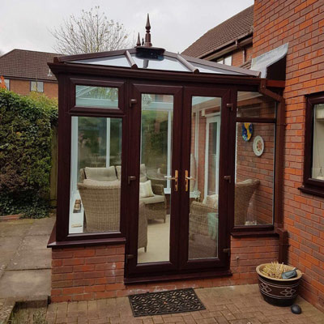

Call Us: 07766 577177
Halo Windows Services
At Halo Windows Swindon we over a range of bespoke services that cover most window, door and conservatiory installation, repairs and maintenance.
No matter how big your needs we have a solution for you.
Windows
Some options we offer are:
- Sash windows
- Bay windows
- Tilt and Turn windows
- Roof windows
Doors
Some options we offer are:
- Front Doors
- Wooden doors
- Bifold Doors
- Stable Doors

Conservatories
Some options we offer are:
- Conservatory Builds
- Conservatory Design
- Conservatory Repairs
Contact us about any queries or questions you might have.
We can assist with any enquiries and offer a free quote for any size job.